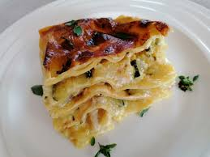

Recept na Lasagně

Potřebné suroviny
- Cibule červená 1ks
- Celer řapíkatý 3 stonky
- mrkev
- sůl a pepř
- tomatová pasta 150 gramů
- loupaná rajčata 400 gramů
- pasata
- olivový olej
- červené víno 1 sklenice
- vepřové mleté 500 gramů
- hovězí mleté 300 gramů
- telecí mleté
Postup
Jednotlivé kroky, jak postupovat
- Nakrájet zeleninu (mrkev, celer, cibule)
- Do velkého hrnce na olej vložit cibuli a osmažit do zlatova
- Přidat mrkev a celer -> restovat 5 minut
- Přidat půlku vína a povařit aby se vypařilo
- Do směsi přidat mleté maso a nechat maso zešednout
- Osolit a opepřit -> počkat až se odvaří šťáva a přidat druhou půlku vína